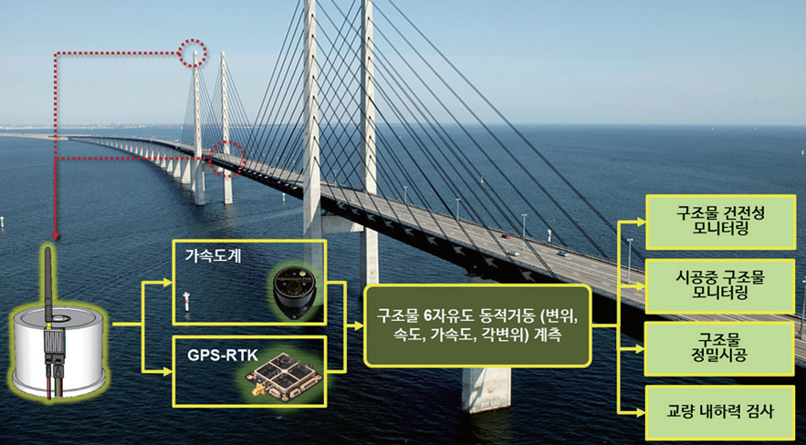
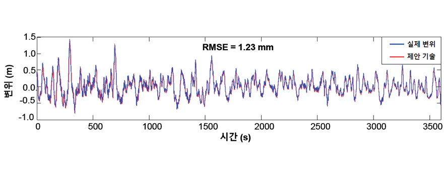

주제별 연구성과
주제별 연구성과
KAIST RESEARCH ACHIEVEMENTS
구조물 안전성 향상을 위한가속도계
및 GPS-RTK 융합을 통한 구조물
6자유도 동적거동 정밀계측
(변위오차 2mm급) 시스템
건설및환경공학과 손훈
요약
LDV나 LVDT와 같은 변위 센서는 설치문제로 인해 해상 교량과 같은 대형 구조물에 적용하기 어렵다. 대신, GPS-RTK가 대형 구조물의 변위 계측에 사용되고 있으나, GPS-RTK는 수직변위 정확도가 1~5cm 로 낮고 고가이다. 본 연구에서는 정밀 3축 가속도계와 저가 GPS-RTK를 이단계 칼만필터로 융합하여 구조물 6자유도 변위, 속도, 가속도 및 각변위를 변위기준 2mm 이하의 오차와 100Hz 급의 샘플주파수로 정밀 계측 가능한 세계 최초/최고 수준 구조물 동적거동 모니터링 시스템을 개발했다. 이를 바탕으로 3건의 SCI 논문을 게재하였고, 3건의 특허(2건 등록완료 및 1건 등록 심사중) 및 3건의 기술이전(3억원) 성과를 달성하였다. 또한 영종대교, 이순신대교, 중국 Xihoumen교에서의 현장실험을 통해 제안기술의 우수성을 검증하였으며, 실제 본 기술은 인천국제공항고속도로 교량계측시스템 구축 사업의 일환으로 현재 영종대교에 설치 중이다. 또한, 건설신기술 인증 및 국외 특허출원을 통하여 국내외 시장개척 및 상용화를 추진 중에 있다. 본 기술은 구조물 안전진단에 핵심인 변위를 정밀하게 계측함으로써 사회기반시설 및 건설구조물 건전성 모니터링, 정밀시공, 내하력 평가의 정확성을 향상 시키고 검사의 신뢰성을 높일 수 있으며 구조물의 안전도를 제고할 수 있다.
연구배경
구조물의 동적변위는 건전성 평가에 있어서 가장 중요한 동적응답이다. 현재 구조물의 변위계측에 가장 많이 활용되는 LVDT는 고정지점 확보를 위해 복잡한 가설구조물 설치가 필요하여 설치시간 및 비용이 과다하고 상시 계측이 어렵다. 또한 GPS-RTK는 샘플주파수와 변위 정밀도가 각각 20Hz 와 1~5cm 에 불과하며, 특히 수직변위 계측에 취약 하다.
따라서 보다 신뢰성 높은 구조물 안전진단을 위해서는 기존 기술들보다 정밀하게 변위를 계측할 수 있는 센서 개발이 필요하다. 또한 국내 유지관리 기술의 비약적 발전을 위해서는 센서 및 계측장비의 국산화가 절실하다. 개발된 시스템은 가속도계와 GPS를 하나의 시스템으로 통합하여 6자유도 변위, 속도, 가속도, 각변위를 동시에 정밀 계측할 수 있고, 이를 바탕으로 구조물 안전관리 및 건전성 모니터링 신뢰성을 높일 수 있다.
 그림 1. 제안된 구조물 6자유도 동적거동 정밀계측 시스템 개요
연구내용
본 연구에서는 고정밀 3축 가속도계와 저가 GPS-RTK를 융합하여 구조물 6자유도 변위, 속도, 가속도 및 각변위를 변위기준 2mm 이하의 오차와 100Hz급의 샘플주파수로 계측 가능한 세계 최초/최고 수준의 구조물 동적거동 모니터링 시스템을 개발하였다. 3축 가속도계 모듈에서 획득한 고정밀도/고샘플주파수의 3자유도 가속도와 저가 GPS-RTK 모듈에서 획득한 저정밀도/저샘플 주파수의 3자유도 변위 신호를 이단계 칼만필터로 융합하여 가속도계의 바이어스 누적오차를 보정함 으로써 고정밀도/고샘플 주파수의 6자유도 변위, 속도, 가속도 및 각변위를 실시간으로 산정할 수 있다. 개발한 이단계 칼만필터 알고리즘은 다량의 변수를 병렬 처리하여 연산시간을 대폭 감소시킬 수 있고, 가속도계 이중적분시 발생하는 누적오차를 효과적으로 제거할 수 있다. 또한 일반 칼만필터가 오차보정을 위해 많은 연산량의 후처리 과정을 필요로 하는 것과는 달리 추가적 후처리 없이도 실시간으로 구조물의 동적거동 산정 정밀도를 향상시킬 수 있다. 개발된 시스템은 국내의 영종대교와 이순신대교, 중국의 Xihoumen bridge에서 현장실험을 통해 현재 교량에 설치된 GPS-RTK의 정밀도(약 5~10mm)보다 월등히 우수한 정밀도(약 1-2mm 수준)를 갖는 것을 검증하였다.
 그림 2. 이순신대교 현장성능검증 실험 결과
기대효과
- 제안기술은 하나의 센서로 구조물의 6자유도 변위, 속도, 가속도 및 각변위를 동시에 계측할 수 있는 세계 최고/최초의 시스템이다. 기존 건설구조물에 적용되는 변위 센서인 GPS-RTK(3,000만원)와 비교하여 성능이 월등히 우수하므로(정확도 2mm 이내/샘플주파수 100Hz), 검사의 신뢰성을 높일 수 있으며, 안전에 대한 국민의 요구를 충족 시킬 수 있다. 또한 기존 변위센서보다 저렴한 가격(약 1,500만원)으로 상용화 가능할 것으로 예상된다. 현재 2개 특허가 등록되었고, 1개의 특허가 등록 예정이다. 또한, 3건(3억)의 기술이전을 완료하였다. 이를 바탕으로, 건설신기술 인증 신청을 완료하였으며, 2016년도 11월에 공고된 49억 상당의 “인천국제공항고속도로 교량계측시스템 제조/구매” 사업에 본기술 선정됨에 따라 영종대교에 적용 될 예정이다.
연구성과
[논문 1] Kiyoung Kim, Jaemook Choi, Gunhee Koo and Hoon Sohn, “Dynamic displacement estimation by fusing biased high-sampling rate acceleration and low-sampling rate displacement measurements using two-stage Kalman estimator,” Smart Structures and Systems, Vol. 17(4), pp. 647-667, 2016
[논문 2] Junhee Kim, Kiyoung Kim, Hoon Sohn, “Autonomous dynamic displacement estimation from data fusion of acceleration and intermittent displacement measurements,”Mechanical Systems and Signal Processing, Vol. 42(1-2), pp. 194-205, 2014
[수상] 연구대상, KAIST, 2017
[특허 1] 동적 변위 계산 장치 및 동적 변위 계산 방법, 등록번호 : 10-1803503-0000
[특허 2] 구조물의 정밀 계측 시스템 및 그 방법, 출원번호 : 10-2017-0061811
[기술이전 1] 동적 변위 계산 장치 및 동적 변위 계산 방법 : 2016.06.03., 풍산 FNS
[기술이전 2] 동적 변위 계산 장치 및 동적 변위 계산 방법 : 2016.12.14., TM ENC
[기술이전 3] 동적 변위 계산 장치 및 동적 변위 계산 방법 : 2016.12.14., EJTECH1